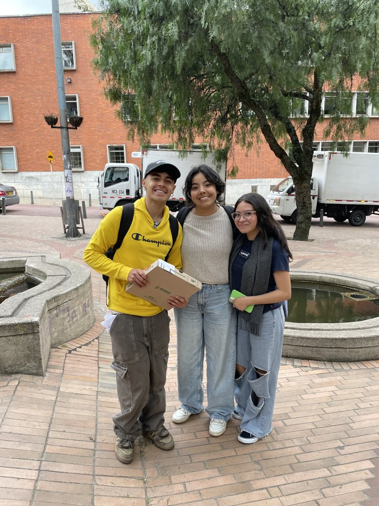

Mi barrio, Las Aguas
Llevo tres años viviendo en esta zona del centro. Oficialmente mi casa queda en La Veracruz, pero yo siempre la he sentido parte de Las Aguas. Camino todos los días hasta la Universidad de los Andes y el barrio me da almuerzo, helados y escenas raras que casi siempre dan risa.
- 25lugares que visito
- 14para comer
- 630 mcaminando a la U
- 3límites en el mapa
Dónde queda y hasta dónde llega
Puedes mover y hacer zoom al mapa. Hay tres límites. La línea azul es el sector catastral oficial Las Aguas (003103) y la línea morada es el sector oficial La Veracruz (003109), los dos de Catastro Bogotá. La línea punteada de ladrillo es el que yo siento como mi barrio. El panel del mapa permite prender y apagar cada capa.
- Las Aguas, sector oficial
- La Veracruz, sector oficial
- Mi límite percibido
- Ruta a pie a la U
- Comida
- Tiendas
- Ocio, deporte y cultura
Posiciones de los lugares aproximadas.
Modo ubicar. Elige un lugar y haz clic en el mapa donde queda. Para la ruta, elige "Ruta" y haz clic en cada giro, de la casa hacia la universidad. Cuando termines, copia el código.
¿Es mi barrio?
Según Catastro Bogotá, mi casa queda en el sector de La Veracruz, a pocas cuadras del límite con Las Aguas. Aun así, yo siempre he considerado que vivo en Las Aguas y me mantengo en ese barrio. Es donde estudio, donde almuerzo y donde paso casi todo el día. Mi límite percibido incluye la zona donde vivo, pero el límite oficial no. Esa diferencia entre el barrio que dice el mapa y el que uno siente es justo lo que quería mostrar.
Lo que hago en Las Aguas
Mi barrio se vive comiendo. Estos son los lugares donde almuerzo, tomo helado, compro lo que necesito y paso el rato con mis amigos.
Toca una tarjeta para verla en el mapa.
- Empanadas de HenryLa parada rápida cuando hay hambre y poco tiempo. Sus empanadas de queso son mis favoritas y cuestan 4.000 pesos.
- El CorralMi gusto culposo. Cada mes, sí o sí, voy a comerme una buena hamburguesa en combo.
- ArepasUn lugar pequeño, al frente de mi casa, donde venden arepas rellenas. Son deliciosas y súper recomendadas.
- Central XAquí almuerzo entre semana. Tiene un menú variado de platos del día, me gusta pedirlo con pechuga y cuesta 15.000 pesos.
- Crepes & WafflesComo soy fanática del helado, de vez en cuando vengo por un cono de dos bolas. Son muy deliciosos y hay muchísimos sabores para probar.
- One BurritoCompro bowls cuando mi presupuesto para el almuerzo es un poco más amplio. Son muy ricos y la porción es buena. También puedes cambiar el bowl por un burrito, y los dos cuestan lo mismo.
- AramitasMe encanta su comida a la carta, y me trae bonitos recuerdos: iba a almorzar con un profesor al que le tengo mucho aprecio y con otros compañeros que veían clase con él.
- City UEs donde queda Aramitas. A veces voy con amigos a jugar billar o ping pong.
- La Gata GolosaEs el centro deportivo de la universidad. Me gusta ir mucho a hacer ejercicio o practicar algun deporte, como el Baloncesto.
- CafeteríasCuando quiero salir con mis amigos a un lugar tranquilo para charlar y comer algo, vamos a alguna de estas cafeterías. Son muy acogedoras y tienen un ambiente agradable para pasar el rato.
- Box PlazaUn lugar con containers donde encuentras comida de todo tipo: hamburguesas, italiana, mexicana, asiática y muchas opciones más. Siempre hay gente. Mi favorito es Santo Gyro, de comida griega, y me encanta su gyro mixto con papas fritas.
- Chick n ChipsMuy conocido por sus tenders de pollo. Alrededor de la universidad siempre se ven estudiantes cargando sus cajas para llevar.
- Frijol y AjiacosUn restaurante relativamente nuevo donde solo venden, literalmente, frijoles y ajiacos. Es muy rico y a buen precio.
- HornitosAquí te das un lujito: un desayuno muy delicioso o un postre para el camino.
- Doña BlancaUna panadería donde consigues desayunos, almuerzos y cenas. Es pequeña, pero siempre está llena.
- CinematecaMe gusta ir los fines de semana a ver películas nuevas en cartelera. La entrada es muy económica y ahí mismo hay una tienda con cosas muy curiosas.
- El Mono PapeleríaAquí encuentras todo lo que necesitas, desde una impresión hasta dulces de cualquier tipo.
- OlímpicaEl supermercado más cercano a mi casa. Voy cuando busco ingredientes que no encuentro en otros lugares.
- D1Supermercado con gran variedad de productos a precios competitivos.
- AraCadena de tiendas con gran variedad de productos a precios competitivos.
- Centro comercialAquí hay muchísimos tipos de tiendas: peluquerías, salones de belleza, modisterías donde te arreglan la ropa, canchas de fútbol y más. También es otro de mis lugares del desvare.
- OxxosLa tienda del desvare, para cuando necesito algo para tomar o para picar entre clases.
De la casa a la universidad
Salgo de mi casa y camino hacia el oriente, subiendo hacia Los Andes. Son más o menos 600 metros, a pie, sin necesidad de transporte. La ruta está dibujada en el mapa en trazo grueso. A veces cambio el camino y me voy por la estación de Las Aguas.
Siempre que camino por esta zona voy muy precavida. No suelo dejar que la gente se me acerque, porque por aquí roban bastante. Es un recorrido corto, pero lo hago con los ojos abiertos.
Más allá de Las Aguas
No cuento la Séptima como parte de mi barrio, pero de vez en cuando, los domingos, salgo para allá. A veces voy al mercado de las pulgas y otras a dar un septimazo. Lo que más me gusta es chismosear los libros que hay en la Panamericana de la Séptima.
También me encanta probar restaurantes nuevos, y los fines de semana, cuando tengo tiempo, salgo a buscar alguno. Para eso me voy a La Candelaria. No la considero parte de mi barrio ni la incluí en mi límite, pero tiene joyas ocultas de comida y una vez que las encuentras ya no quieres dejar de buscar más.
Mis tres años en Las Aguas
Hace tres años llegué a Bogotá y a esta zona para estudiar. Al principio vivía en otro lugar del mismo sector y este semestre me mudé, pero sigo a pocas cuadras de donde empecé, así que para mí el barrio sigue siendo el mismo. Desde entonces he caminado estas calles tantas veces que ya sé por dónde me conviene ir según la hora y qué locales siguen abiertos cuando llego.
Mis días aquí tienen dos caras. Cuando salgo de mi casa en la mañana hace mucho frío y hay poca gente: los locales apenas están abriendo o recién abrieron, y el centro todavía parece dormido. Cuando regreso ya es de noche, los locales están cerrados y lo que sigue abierto son las arepas que me gustan. Algunas noches hay bastante tráfico, y varias personas se paran en la calle, frente a donde vivo, a tratar de controlarlo. Lo único que logran es empeorarlo y ganarse un par de insultos de los carros.
Y entre una cara y la otra pasan cosas que no pasarían en ningún otro lado. Una vez iba caminando con unos amigos y un señor me miró y me empezó a ladrar. Otra vez estaba comiendo salchipapa en un restaurante y vi a dos personas con uniformes amarillos caminando por el semáforo cuando estaba en rojo. Se pusieron a hacer una coreografía como de robots, sin pedir dinero, y lo repitieron muchas veces en el mismo semáforo. Son escenas raras, pero casi siempre me sacan una sonrisa.
Con el tiempo uno empieza a reconocer caras. Ya reconozco a las personas que trabajan en los lugares a los que suelo ir, y también a un señor que siempre veo por la calle, al lado de la estación de Las Aguas, con un Pokeron en la mano. No sé quién es, pero ya hace parte del paisaje de mi recorrido.
Lo caótico, lo extraño y lo chistoso.
El barrio no ha cambiado mucho en estos tres años. Han construido más edificios, han cambiado algunos locales y han arreglado vías, pero se siente igual. Por eso, si algún día me voy, eso es lo que más voy a extrañar: lo caótico, lo extraño y lo chistoso que es vivir por acá.
Un barrio hecho de agua
La historia del lugar es mucho más larga que la mía, y empieza con el agua.
- Antes de la ciudadLos muiscas desarrollaron su sistema social alrededor del río que llamaban Vicachá, “el resplandor de la noche”. Más tarde recibió el nombre de San Francisco, igual que la primera iglesia construida en Bogotá durante la colonia. [Bogotá.gov.co]
- 1600Comienza a levantarse la ermita de Nuestra Señora de las Aguas, a la orilla del río San Francisco, en medio de numerosas quebradas y manantiales. [Bogotá 360]
- Hacia 1610El presbítero Juan Cotrina y Copete toma la iniciativa de convertir la ermita en una iglesia con claustro para los dominicos. El claustro queda concluido en 1650. [Bogotá 360]
- Década de 1640Según la Alcaldía de Bogotá, el presbítero Juan Cotrina de Valero encabeza la construcción de una modesta capilla para albergar una imagen de Nuestra Señora de las Aguas. [Alcaldía de Bogotá]
- 1860 a 1885Durante la guerra de 1860, el claustro se transforma en hospital militar y mantiene ese uso hasta 1885. [Bogotá 360]
- 1948 y 1949La Universidad de los Andes se funda el 16 de noviembre de 1948 por un grupo de jóvenes liderado por Mario Laserna Pinzón y abre en 1949 con siete programas, 79 estudiantes y 16 profesores. [Universidad de los Andes]
- 1974El antiguo claustro se convierte en la sede de Artesanías de Colombia. [Bogotá 360]
- HoySegún la Alcaldía de Bogotá, todavía se puede ver el cauce del río, denominado “Las Aguas”, en la calle 19 con carrera 3. [Bogotá.gov.co]
Las fuentes no coinciden del todo. Para la ermita y la iglesia, una dice 1600 y habla de Juan Cotrina y Copete, y otra dice década de 1640 y habla de Juan Cotrina de Valero. Por eso muestro las dos versiones. Los datos de esta línea de tiempo salen de las fuentes enlazadas en cada punto.
Selfie

De dónde salen los datos
- Límites oficiales. Sectores catastrales Las Aguas (003103) y La Veracruz (003109), Unidad Administrativa Especial de Catastro Distrital, servicio Mapa de Referencia de Bogotá. Consultado el 22 de octubre de 2026.
- Mapa base. © colaboradores de OpenStreetMap. Vista de satélite: imágenes © Esri. Mapa interactivo hecho con Leaflet.
- Historia. Alcaldía de Bogotá, Caminata Río San Francisco Vicachá; Alcaldía de Bogotá, iglesias del centro; Villegas Editores, Bogotá 360 (libro disponible en 100libroslibres.com), apartado sobre el Claustro de las Aguas; Universidad de los Andes, historia de la universidad.
- Límite percibido, lugares y ruta. Dibujados por mí a partir de mi experiencia en el barrio. Las posiciones son aproximadas.
- Tipografías e ilustraciones. Fredoka y Nunito, de Google Fonts. Las ilustraciones fueron dibujadas para este trabajo.